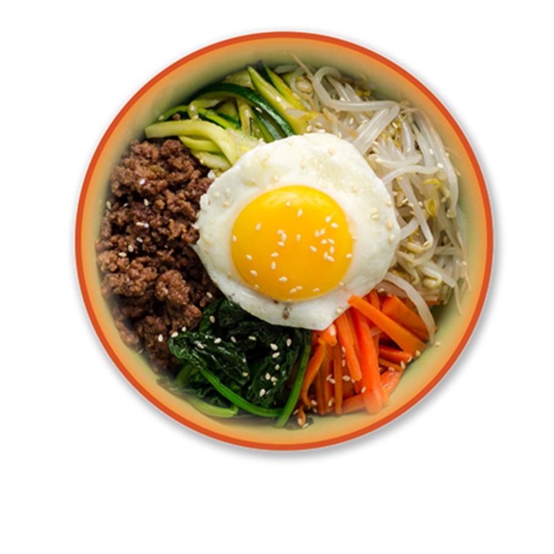
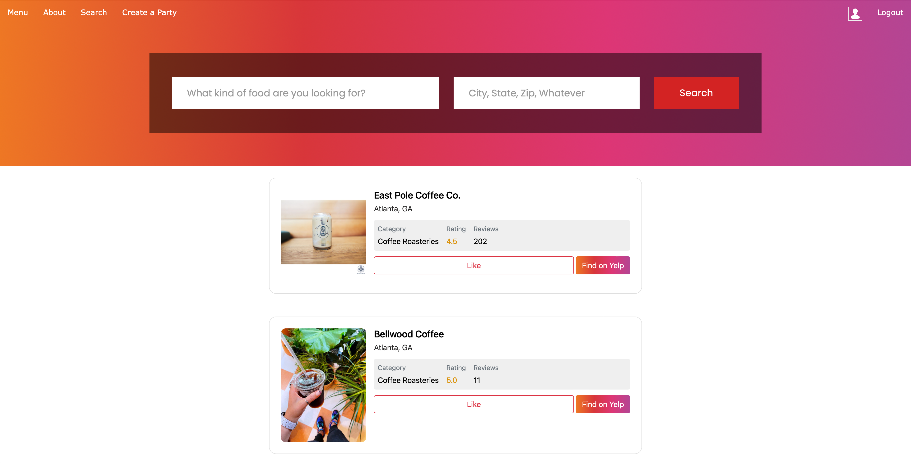

Decide where to eat!

With our new food fight web app, we help minimize the stress of you and your friends the next time you’re unable to decide where to eat. Often times You and your friends are faced with the issue of being unable to decide where to eat and end up wasting time trying to narrow down a few options. Well, Now that process can be made easier with FoodFight and it’s ability to connect to Yelp’s API. It can display the top 20 restaurants depending on your search input and you can even like a restaurant that catches your eye which is then saved under your own designated profile. After that, you can create a group with your friends and look through all of each other’s liked restaurants to make your decision. With this, the time it takes to make a decision will be drastically decreased and allow for everyone to have a say on what they’re interested in! Use the foodfight web app so your level of hangry decreases and your level of happy increases. 🙂